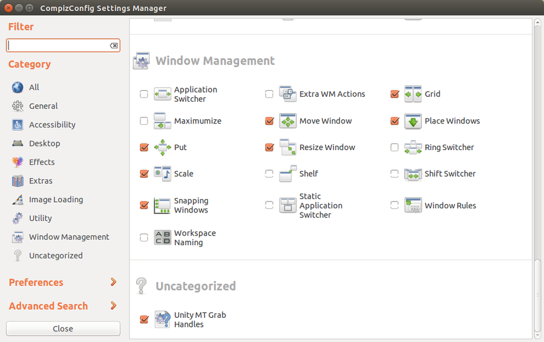

I am exploring keyboard shortcuts to improve workflow efficiency and happy to discover that Ubuntu's Unity desktop is configured very keyboard-friendly by default. Here are the Ubuntu/application key combos that I find most useful...
Launcher
- Super
- open Dash
- Super(Hold)
- display shortcuts
- Super-Tab
- switch between Launcher applications
- Super-(1-9)
- run application (1-9) on Launcher
- Alt-F2
- run command
Switching
- Alt-Tab
- switch between running apps
- Control-Alt-Tab
- switch between running apps from all workspaces
- Super-S
- show and select workspaces
- Control-Alt-(Left,Right,Up,Down)
- navigate between workspaces
Windows
- Super-W
- show windows in current workspace
- Shift-Super-W
- show windows in all workspaces
- Control-Super-Up
- maximize window
- Control-Super-Down
- minimize window
- Alt-Space
- open window menu
- Alt-F4
- close window
Applications
Firefox
- Control-T
- open new tab
- Control-Tab
- switch tab
- Shift-Control-Tab
- switch tab backwards
- Control-W
- close tab
- Control-L
- enter new address/search
- F5
- reload page
Gnome Terminal
- Shift-Control-T
- open new tab
- Alt-(1-9)
- switch to tab {1-9}
- Shift-Control-W
- close tab
Bash
- Control-A
- move to the start of the line
- Control-E
- move to the end of the line
- Alt-B
- move back one word
- Alt-F
- move forward one word
- Control-W
- erase a word
- Control-U
- erase a line
- Control-L
- clear screen
- Control-R
- reverse incremental search of history
Tmux
My tmux cheatsheet.
Gnome Screenshot
- PrtScr
- screenshot
- Alt-PrtScr
- window screenshot
- Shift-PrtScr
- selected area screenshot
Custom
Move windows between displays
At home I connect my Ubuntubook to an external 24" display to form a combined desktop across the 2 devices. I use Compiz to create a Control-Super-W key combo to move windows back and forth between displays:
$ sudo apt-get install compizconfig-settings-manager compiz-plugins-extra
Open the Dash and run compiz settings manager. Enable and select the Window Management -> Put plugin and configure a key shortcut for Put to Next Output.
Built-in screen (1366x768) and external display (1920x1080) form a combined desktop of different resolutions. Select Put -> Misc. Options -> Activate "Avoid Offscreen" to ensure maximized windows are properly resized when moved between displays.
Logout and back in to activate modifications.
Source: Move windows between monitors
Chromebook keyboard shortcuts
Top row on my Ubuntubook keyboard has a series of shortcut icons (brightness, volume, etc.) that identify in Linux as the F1-F10 keys and the Search key (in the CapsLk position) acts as Super (Windows) modifier key.
Enable these keyboard shortcuts in Ubuntu by first installing:
- xbindkeys - associate keys to shell commands
- xbacklight - set backlight level using RandR
- pulseaudio-utils - manage sound with pactl
- xvkbd - send characters to another client
$ sudo apt-get install xbindkeys xbacklight pulseaudio-utils xvkbd
See Chromebook to (L)ubuntubook for a sample configuration.
Next thing is to start working on my touch-typing!